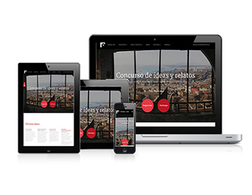

Académico

Web
Proyecto rparticipativo ealizado en cnjunto por el taller de 4° año de diseño gráfico de la PUCV

Estudios
Gráficos
Imágenes de estudios realizado diferentes pintores de la historia y croquis de estudios realizados para el taller de diseño donde se observan variables, movimiento y formas luminosas

Editorial
Ediciones hechas para el taller de 3er año de Diseño Gráfico, con diferentes contenidos editoriales

Tipografía
Imágenes de estudios tipográficos realizado durante el 2°año de Diseño Gráfico

Digital
Infografías y visualizaciones digitales realizadas con el programa de Adobe Illustrator par el taller de LC3 de 2°de Diseño Gráfico